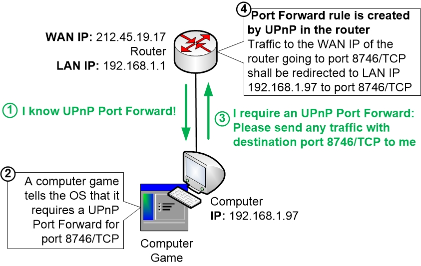

O UPnP é um serviço que automatiza a descoberta de dispositivos em uma rede local, permitindo que diferentes dispositivos na mesma rede se reconheçam automaticamente e conectem entre si. Recomenda-se habilitar para que o cliente consiga conectar dispositivos em específico na sua rede sem ter dores de cabeça (como câmeras, por exemplo). Pode também ser uma implementação interessante para clientes com problemas em jogos visto que é uma alternativa para o redirecionamento de portas.
